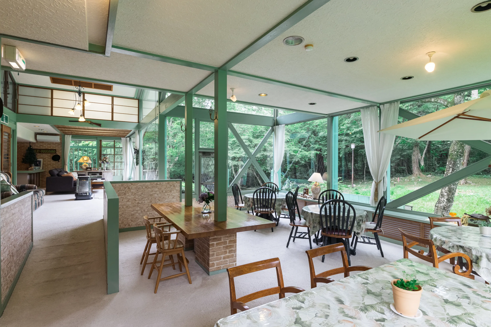
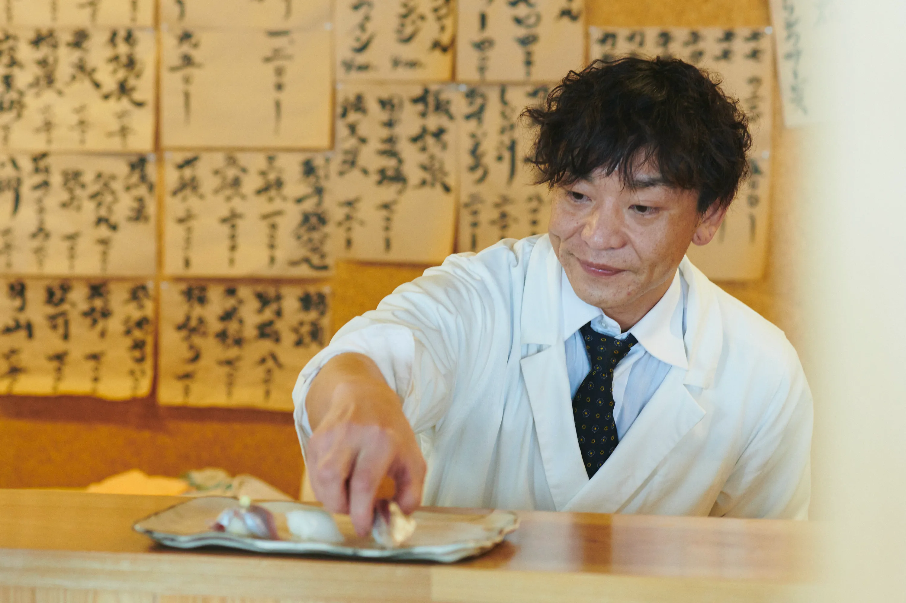
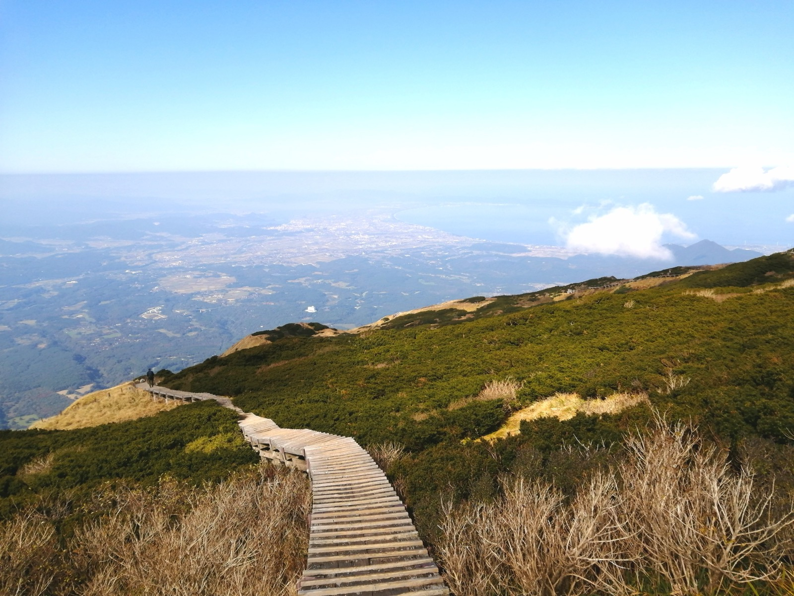
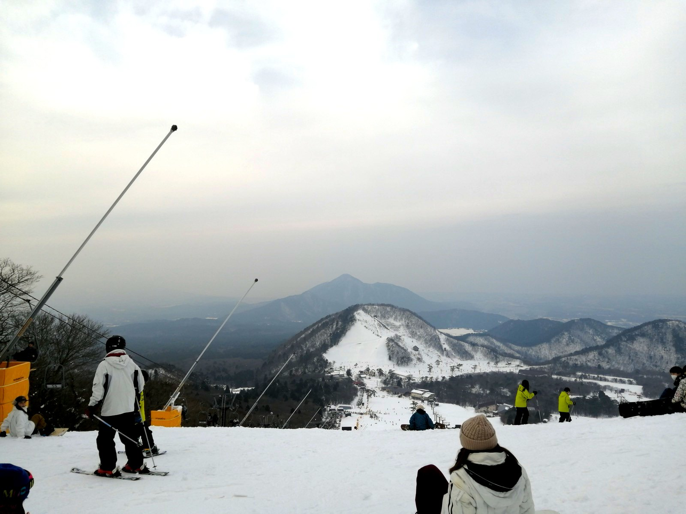
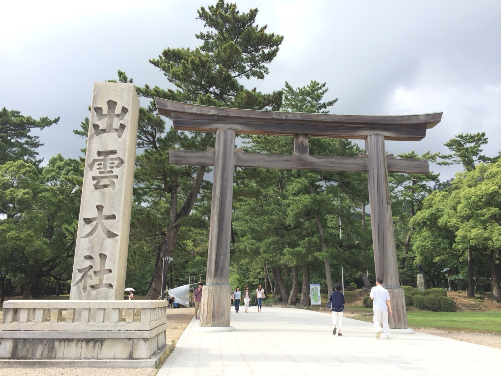
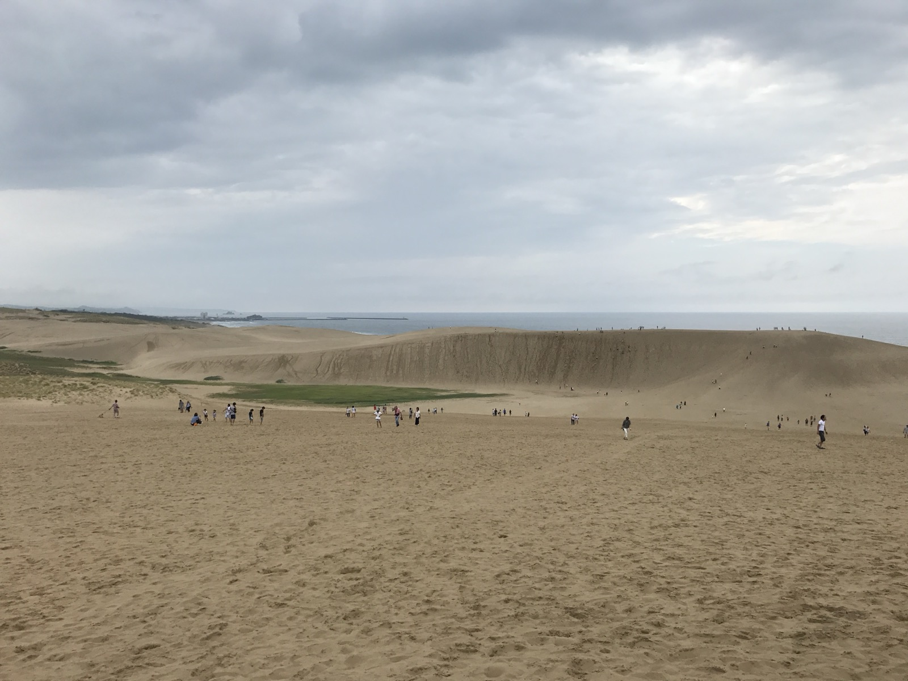
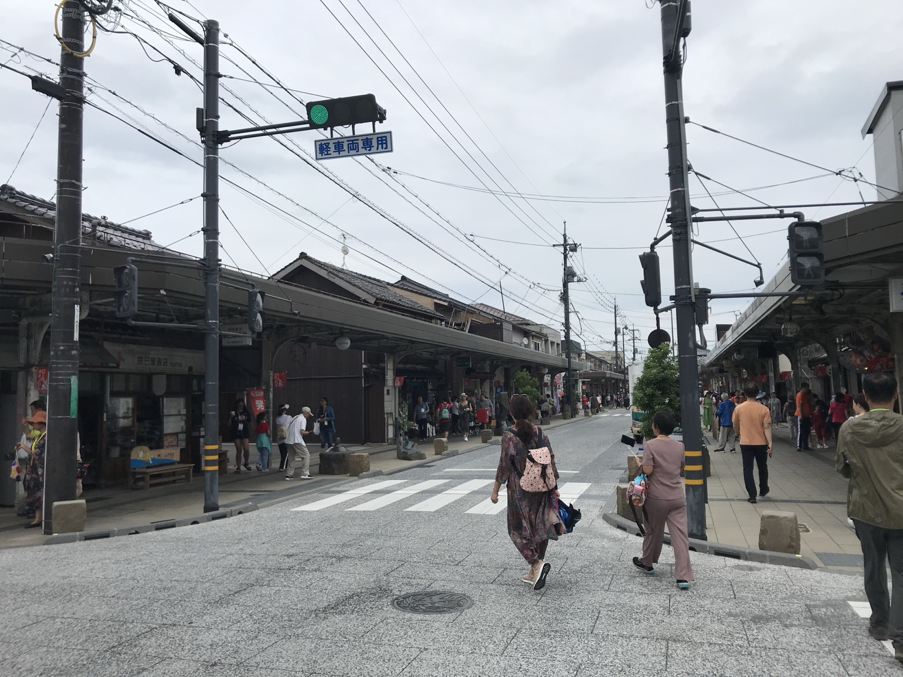
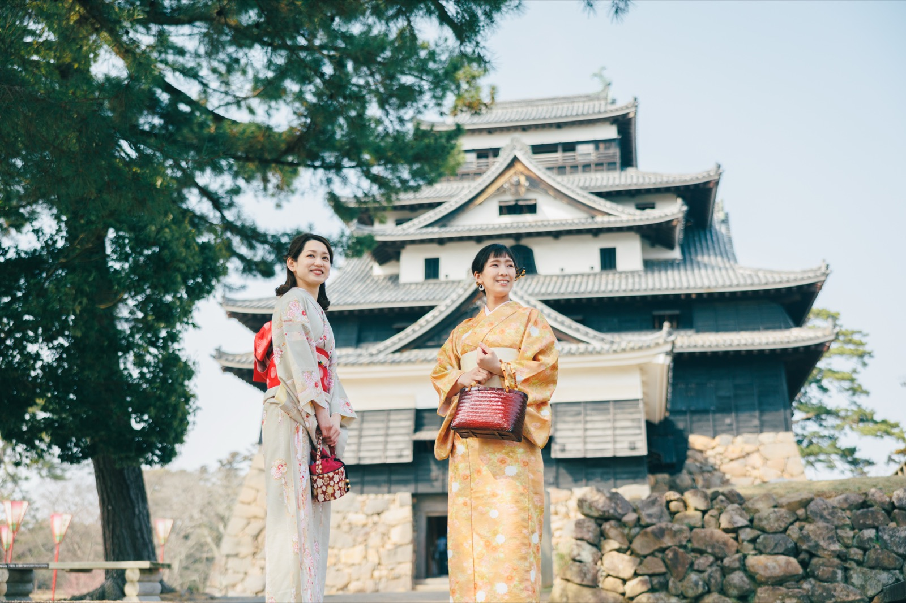
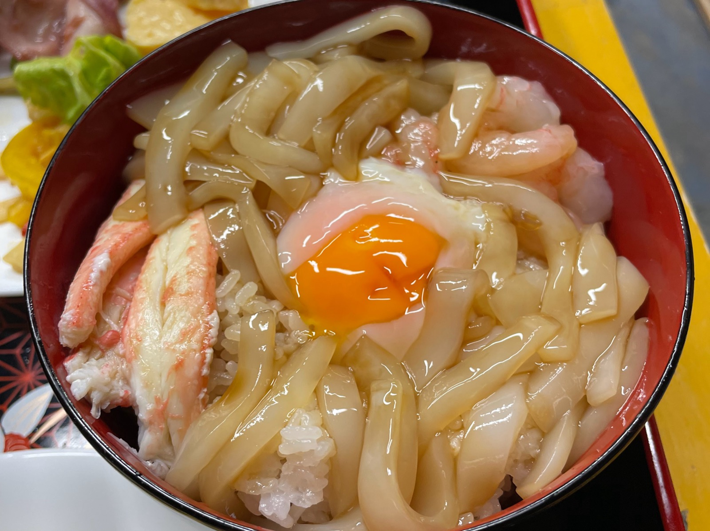
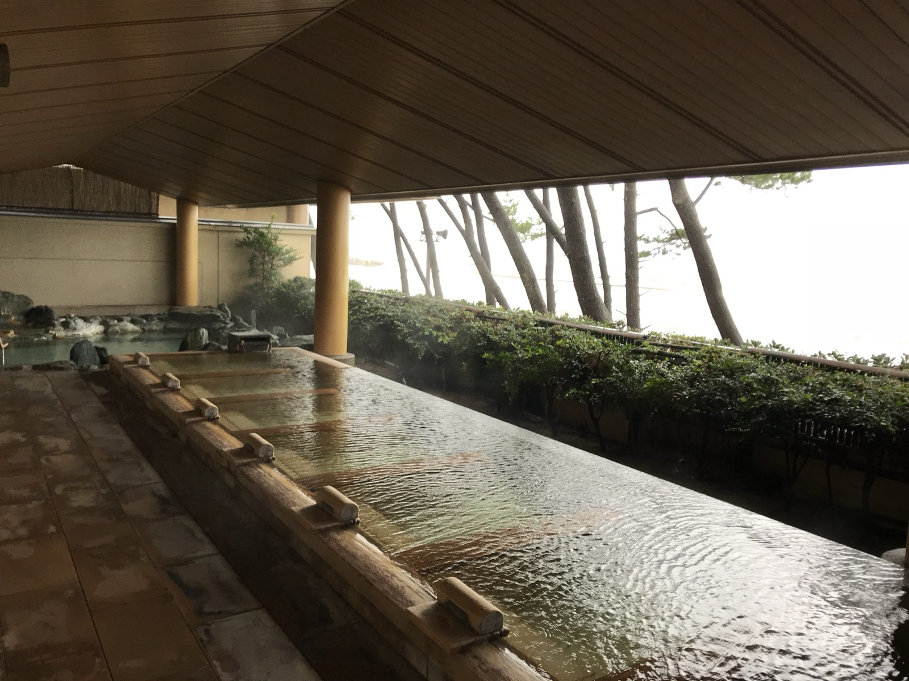

大山の麓、静かな森の中に佇む一軒家。
ここには、豪華な装飾も、賑やかなエンターテイメントもありません。
あるのは、窓一面の森と、鳥のさえずり。
澄んだ空気の中、宿の周りをゆっくり散策したり、
広い中庭で、コーヒー片手に深呼吸したり。
時計を外し、予定を忘れ、贅沢な朝の時間を味わうための場所です。

窓から差し込む朝の光、森を切り取る景色。
隣接する建物がないため、小さなお子様が大きな声を出しても、走り回っても大丈夫です。
敷地内にはオーナー夫妻が常駐しております。程よい距離感で控えておりますので、何かお困りの際はいつでもご相談ください。
1階の開放的な共有スペースに対し、2階は静かにお休みいただけるプライベートフロアです。
和室2部屋、洋室3部屋（ダブル2室、ツイン1室）を備えており、ご家族やグループでもゆったりとお寛ぎいただけます。
森の緑を絵画のように楽しめる浴室も2階にご用意しております。


オーナーが厳選した地元産の完熟フルーツを添えた、こだわりのモーニング。
夕食は、プライベートガーデンでの自由な持ち込みBBQや、地元の新鮮な海の幸を堪能できる提携の寿司店「郷の鮨たむら」へのご案内、世界的にも評価の高い「大山Gビール」を楽しめるレストランへの送迎プランをご用意しております。



〒689-3317 鳥取県西伯郡大山町鈑戸１５４２−９１
米子鬼太郎空港から車で約45分 / 米子駅から車で約30分
敷地内駐車場完備（6台）
1日1組限定で建物をまるごと貸し切る宿です。最大12名・全5室・約200㎡、BBQのできる庭付き。大山スキー場まで車で約5分。ホテルやコテージとの違い、料金の目安、よくあるご質問をまとめました。
大山の登山・スキーから、出雲大社・鳥取砂丘・水木しげるロードまで。
ハレ・マカワオを拠点にした、山陰の楽しみ方をご紹介します。

中国地方最高峰・大山。登山口まで車約10分。下山後は豪円湯院、夜は鮨たむら——登山を満喫する1日の過ごし方をご紹介。
ガイドを読む
ゲレンデまで車約5分。2026年シーズンは運営体制が変わる予定で、詳細は順次更新します。冬の大山滞在の拠点に。
ガイドを読む
縁結びの古社へ。大山の拠点から車約1時間30分で日帰り参拝。参拝作法と見どころ、神門通りの食べ歩きも。
ガイドを読む
日本最大級の海岸砂丘へ車約1時間10分。馬の背・砂の美術館・らくだ体験など、子連れでも楽しめるスポット。
ガイドを読む
車約50分、鬼太郎の世界へ。177体の妖怪ブロンズ像と海産物グルメを楽しむ境港の日帰り旅。
ガイドを読む
国宝天守と朝ドラ「ばけばけ」の舞台へ車約50分。小泉八雲ゆかりの城下町・塩見縄手、出雲そば「八雲庵」もあわせて。
ガイドを読む
「海鮮丼はどこで食べる？」日吉津・琴浦・境港の名店を、境港直送の新鮮魚介とともに。車20〜50分圏内。
ガイドを読む
登山・観光後にひと風呂。大山寺の豪円湯院から日本海の皆生温泉まで、エリア別に近隣6施設をご紹介。
ガイドを読む初夏のアカショウビン、夏の夜のホタル、朝食中のキツネ。敷地と森で出会える生きものを、季節のごよみにまとめました。
ガイドを読むInquiries
お問い合わせの多いご質問をまとめました。
ご不明点がありましたら、お気軽にご連絡ください。
チェックイン・
チェックアウトの時間
チェックインは15:00〜、チェックアウトは10:00です。アーリーチェックイン（14:00以降）は空き状況によりご対応できる場合があります。遅めのご到着（18:00以降）の場合は事前にご連絡ください。前後の組の滞在があるため、時間厳守にご協力をお願いしています。
最大宿泊人数とお部屋の構成
最大12名様までご宿泊いただけます。客室は全5室（洋室3室・和室2室）で、洋室はダブルベッドまたはツインベッドを備えています。お子様連れのファミリーや多世代旅行・小グループでの貸切ご利用に最適です。1日1組限定で、他のお客様と共有することはありません。
ペットの同伴について
誠に申し訳ありませんが、ペットの同伴はお断りしています。アレルギーをお持ちのお客様も安心してご滞在いただける環境を守るため、また次のお客様へ清潔な状態でお引き渡しするための方針です。
駐車場のご案内
無料の専用駐車場を完備しています。普通車6台分のスペースをご用意しています。大山観光や周辺スポットへのドライブ旅行にも最適です。大型SUV・バンでお越しの際は事前にお問い合わせください。
米子鬼太郎空港からの
アクセス
米子鬼太郎空港（YGJ）から車で約45分です。台湾・台北（桃園国際空港）からの直行便が2025年5月より就航し（週2便）、台湾からのアクセスが格段に便利になりました。大阪・伊丹空港からは車で約2時間30分、米子駅からは車で約30分です。
大山スキー場までの距離
大山スキー場（大山ホワイトリゾート）まで車で約5分です。スキー・スノーボードのシーズンは例年12月〜3月で、ファミリーから上級者まで楽しめる斜面が揃います。レンタルショップも現地にあります。スキー後すぐに別荘に戻れる近さは雪国旅行の大きなアドバンテージです。
お食事オプション
3つのオプションをご用意：①特製フルーツ山盛りフレンチトーストのモーニングセット（要事前予約）、②鳥取和牛BBQ手ぶらセット（食材・機材すべて込み）、③大山名店への送迎プラン。いずれもご予約時または到着3日前までにお申し込みください。